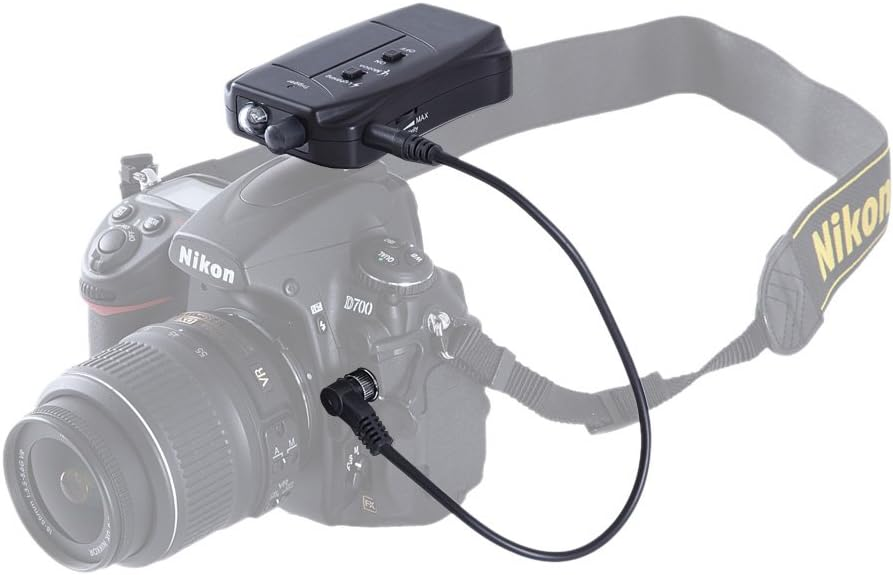

Détecteur de foudre pour appareil photo
Ce détecteur de foudre est un dispositif conçu pour capturer automatiquement les éclairs lors d'orages. Il est directement connecté à l'appareil photo via une prise jack et peut également être utilisé avec un capteur infrarouge pour plus de précision.
Lorsqu'un éclair apparaît, le capteur lumineux détecte la forte augmentation de lumière et envoie immédiatement un signal électronique à l’appareil photo, déclenchant ainsi la prise de vue en une fraction de seconde.
Ce projet a été réalisé avec une carte Arduino, qui analyse les signaux du capteur et transmet l'impulsion nécessaire pour activer l'obturateur de l’appareil photo avec une très faible latence.